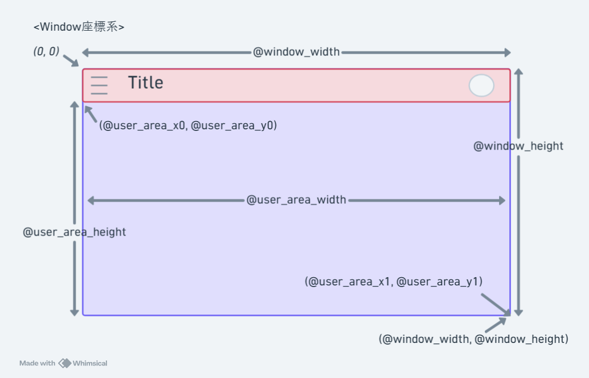
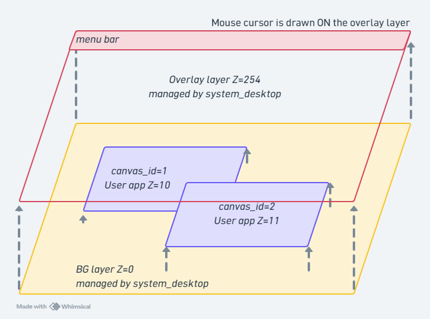
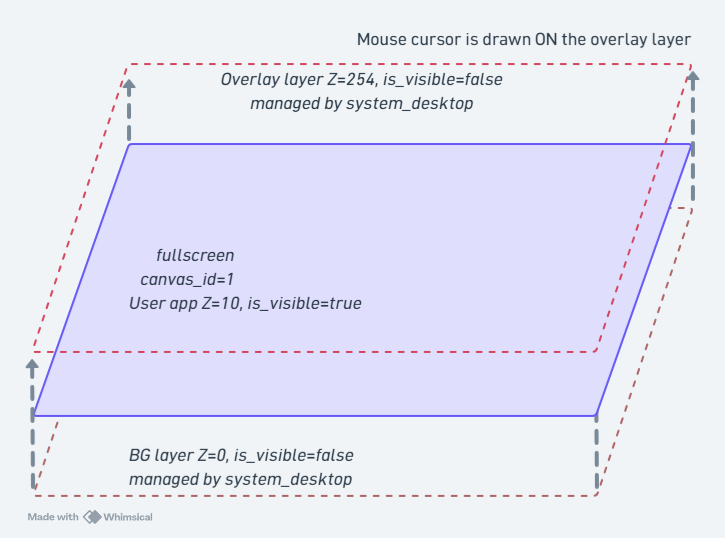

描画 (FmrbGfx)¶
FmrbGfx は描画 API を提供するクラスです。FmrbApp を継承したアプリでは @gfx として参照できます。
present を呼ぶまで画面に出ない
描画コマンドはすべてバッファに蓄積されます。@gfx.present を呼んだタイミングでグラフィックス側に渡り、画面に反映されます。
座標系¶
ウィンドウ左上が原点 (0, 0)、X が右方向、Y が下方向の座標系。ウィンドウの外は描画できません。
ウィンドウ毎に座標系を持ちます。イメージは以下を参照してください。

色¶
RGB332（8bit、R:3 G:3 B:2）を用います。0x00〜0xFF の整数で指定
一部の色については、FmrbGfx::WHITE などの定数もあります。24bit 値から変換する FmrbGfx.rgb_to_332(r, g, b) ヘルパーメソッドもあります。
こちら のようなサイトで色を確認することもできます。
所定の１色を透過色として利用する機能もあります。
描画レイヤーのイメージ¶
通常の描画レイヤーのイメージ

フルスクリーン時の描画レイヤーのイメージ

カラー定数¶
| 定数 | 値 |
|---|---|
FmrbGfx::BLACK |
0x00 |
FmrbGfx::WHITE |
0xFF |
FmrbGfx::RED |
0xE0 |
FmrbGfx::GREEN |
0x1C |
FmrbGfx::BLUE |
0x03 |
FmrbGfx::YELLOW |
0xFC |
FmrbGfx::CYAN |
0x1F |
FmrbGfx::MAGENTA |
0xE3 |
FmrbGfx::GRAY |
0x6D |
色変換¶
FmrbGfx.rgb_to_332(255, 128, 0) # → 0xF0 など
FmrbGfx.hsv_to_rgb(120, 255, 255) # → [r, g, b] (各 0..255)
制御メソッド¶
| メソッド | 用途 |
|---|---|
clear(color) |
画面全体をクリア |
present |
バッファに蓄積した描画コマンドを画面に反映 |
基本図形¶
すべて末尾に color（RGB332）を取ります。
| メソッド | シグネチャ |
|---|---|
set_pixel |
set_pixel(x, y, color) |
draw_line |
draw_line(x1, y1, x2, y2, color) |
draw_thick_line |
draw_thick_line(x0, y0, x1, y1, thickness, color)。1 画素の線を重ねて描きます (描画側に太線がないため) |
draw_rect |
draw_rect(x, y, w, h, color)（枠のみ） |
fill_rect |
fill_rect(x, y, w, h, color)（塗りつぶし） |
blend_rect |
blend_rect(x, y, w, h, color, mode:)（mode: 0=ADD, 1=XOR） |
draw_circle |
draw_circle(x, y, r, color) |
fill_circle |
fill_circle(x, y, r, color) |
draw_ellipse |
draw_ellipse(x, y, rx, ry, color) |
fill_ellipse |
fill_ellipse(x, y, rx, ry, color) |
draw_round_rect |
draw_round_rect(x, y, w, h, radius, color) |
fill_round_rect |
fill_round_rect(x, y, w, h, radius, color) |
draw_triangle |
draw_triangle(x0, y0, x1, y1, x2, y2, color) |
fill_triangle |
fill_triangle(x0, y0, x1, y1, x2, y2, color) |
draw_arc |
draw_arc(x, y, r0, r1, angle0, angle1, color) |
fill_arc |
fill_arc(x, y, r0, r1, angle0, angle1, color) |
draw_arc / fill_arc の角度は整数（度数）。r0 が内径、r1 が外径。
テキスト描画¶
@gfx.set_text_size(2) # 1〜4
@gfx.draw_text(10, 20, "Hello",
FmrbGfx::BLACK) # bg なし→透過
@gfx.draw_text(10, 40, "Hi",
FmrbGfx::WHITE,
FmrbGfx::BLUE) # bg あり→不透明
| メソッド | 用途 |
|---|---|
set_text_size(size) |
テキストサイズ。1〜4 |
draw_text(x, y, text, color [, bg_color], mixed: false) |
テキスト描画。mixed: true で ASCII/日本語ハイブリッド |
set_font(family, size = nil) |
フォント切替（後述） |
current_font / current_text_size |
現在のフォント / サイズ（読み取り専用） |
日本語テキスト・フォント切替¶
set_font(family, size) で日本語フォントに切り替えると、UTF-8 文字列をそのまま描画できます。
# 既定の ASCII フォント（Font0、6x8）
@gfx.set_font(:default)
@gfx.draw_text(10, 20, "Hello", FmrbGfx::BLACK)
# 日本語 8px（misaki_8、システム UI と揃う小さめ）
@gfx.set_font(:ja, 8)
@gfx.draw_text(10, 40, "こんにちは", FmrbGfx::BLACK)
# 日本語 12px（efontJA_12、読みやすい大きめ）
@gfx.set_font(:ja, 12)
@gfx.draw_text(10, 60, "ファミリーmruby", FmrbGfx::BLACK)
対応フォント¶
family |
size |
内容 |
|---|---|---|
:default |
（指定不可） | Font0 6x8 ASCII。起動時の既定 |
:ja |
8 |
misaki_8 8x8、システム UI と同サイズ |
:ja |
12 |
efontJA_12 12x12、読みやすい |
:ja |
16 |
efontJA_16 16x16、見出しや資料向け |
:ja_bold |
12 |
efontJA_12 の太字 |
set_font は選んだものを返します¶
すべての字を機種が持っているとは限りません。set_font は持っているものの中から近いものを
選び (無い大きさは 12 に、無い太字は通常の字に落ちます)、実際に選んだ組を
[family, size] (または [:default]) で返します。
got = @gfx.set_font(:ja_bold, 12)
bold_by_hand = (got[0] != :ja_bold) # 必要なら 1 画素ずらして 2 回描く
この戻り値は text_width と font_height が測る対象でもあるので、そこから組んだ配置は
字の少ない機種でも崩れません。
ハイブリッド描画 (mixed: true)¶
ASCII と日本語が混ざった文字列を 1 回の draw_text で描けます。ASCII 部分は Font0 (6x8)、UTF-8 マルチバイト部分は misaki_8 (8x8) でレンダリングされます。
@gfx.draw_text(10, 20, "puts 'こんにちは'",
FmrbGfx::BLACK, mixed: true)
コード例や英日混在の UI 文字列に便利です。
draw_text_mixed(x, y, str, color, bg_color = nil) は同じものの位置引数版です。
キーワード引数は呼ぶたびに Hash を作るので、確保をしてはいけない再描画の経路では使えません。
こちらは作りません。
draw_window_frame はフォントを保存・復元
FmrbApp#draw_window_frame はタイトルバーを必ず既定の 6x8 で描いてから 呼び出し前のフォント設定を復元 します。アプリ側で毎フレーム set_font を再指定する必要はありません。
JA フォントの読み込みコスト
set_font(:ja, ...) 初回は グラフィックス側でフォントデータを準備するため数十 ms 程度かかります。on_create 内で一度だけ呼ぶのが理想です。
サンプル（日本語）¶
class HelloJaApp < FmrbApp
def on_create
clear_user_area(FmrbGfx::WHITE)
@gfx.set_font(:ja, 12)
@gfx.draw_text(@user_area_x0 + 8, @user_area_y0 + 8,
"こんにちは、Family mruby!", FmrbGfx::BLACK)
draw_window_frame
@gfx.present
end
end
HelloJaApp.new.start
PicoRuby デモ (/app/demo/picoruby.app.rb) の Fonts のページで、既定のフォント、日本語の 8・12・16 画素、混在描画、拡大まで一通り切り替えられます。
画像¶
画像を解いて持っているのは描画側で、描画側は自分のファイルシステムしか読めません。だから 画面に出すまでは 3 段になります。読める場所にファイルを置き、そこから画像を作り、描きます。
@gfx.sync_file("/usr/share/backgrounds/BG_sample.png")
img = @gfx.create_image("/usr/share/backgrounds/BG_sample.png")
@gfx.draw_image(img[:id], x: 10, y: 20)
@gfx.delete_image(img[:id])
まとめて 1 行で書くこともできます。
@gfx.load_image("/usr/share/backgrounds/BG_sample.png", coord: :center)
| メソッド | 戻り値 / 用途 |
|---|---|
sync_file(path, dest: nil) |
描画側の複製をこちらと一致させます。違うときだけ転送します (大きさと CRC32 で判定)。素材にはこれを使ってください。file_status[:exists] で判定すると、書き換えた素材が永久に古いままになります |
transfer_file(path, dest: nil) |
無条件に転送します |
file_status(path) |
描画側での {exists:, size:} |
create_image(path) |
{id:, width:, height:}、または nil。PNG、200KB 程度まで |
draw_image(id, x: 0, y: 0, scale_x: 1.0, scale_y: 0.0) |
描画。scale_y: 0.0 は「scale_x と同じ」の意味です |
draw_tile(image_id, src_x, src_y, w, h, dst_x:, dst_y:) |
SpriteImage の部分領域を canvas にスタンプします |
delete_image(id) |
解放 |
load_image(path, coord: nil) |
転送・作成・描画・present・解放を 1 回で。coord: は [x, y] か :center |
形式が 2 つ、入口も 2 つ
create_image が受けるのは PNG です。スプライトの素材は別物で、RGB332 の BMP を
SpriteImage#load_bmp で読みます。BMP を create_image に
渡しても例外にはならず、画面と同じ大きさの空の画像ができて何も出ません。
画像・アイコンファイル を参照してください。
draw_tile の使いどころ¶
SpriteInstance を作らずに SpriteImage の一部だけ をキャンバスに直接スタンプできます。タイルシート画像から 16x16 のセルを 1 マスずつ並べていく BG 描画に向いています。use_transparent: true で作った SpriteImage の透過色は尊重されるので、上下レイヤを重ねた地図描画もできます。
sheet = SpriteImage.new(@gfx, width: 64, height: 32,
transparent_color: 0, use_transparent: true)
sheet.load_bmp("/usr/share/sprites/test/tilesheet.bmp")
# tilesheet の (0, 0) から 16x16 を canvas の (32, 16) に描く
@gfx.draw_tile(sheet.id, 0, 0, 16, 16, dst_x: 32, dst_y: 16)
より高水準なラッパは TileMap を参照。
マスク¶
1bpp のマスクは、SpriteImage を転送するときに形を切り抜きます。画像から取った画素のうち、 マスクのビットが立っているところだけが書かれます。
| メソッド | |
|---|---|
create_mask(width, height, data) |
マスクを送って id を得ます。data は ceil(width / 8) * height バイト、各バイトは上位ビットから。1 のところが描かれます |
draw_image_masked(image_id, mask_id, x:, y:) |
マスク越しに転送します |
delete_mask(mask_id) |
解放。まだそのマスクを使う描画があれば、その後ろに順序づけられます |
canvas を読み返す¶
get_pixel(x, y) は RGB332 のバイトを 1 つ返します。canvas の外なら 0 です。描画側への
同期的な往復なので、ループの中で 1 画素ずつ呼ぶようなものではありません。
ハードウェアスクロール (Modern のみ)¶
set_viewport(src_x, src_y, w, h) は、アプリが描いている canvas より大きな絵の上を、
描き直さずに窓だけ動かして見せます。canvas は輪として扱われ (元の四角は canvas の端で
回り込みます)、表示範囲より少し大きい canvas があれば、動いた分だけ新しく見えるタイルを
描き足すことで、いくらでも大きな世界を流せます。clear_viewport で元に戻し、canvas 全体を
合成する状態に戻します。Retro 側はどちらの命令も無視するので、
FmrbConst::CHIP_MODEL == "ESP32-P4" で分けてください。
スプライトを四角の中に閉じ込める¶
スプライトは canvas に描いた絵の上に重ねて合成されるので、何もしないと、同じ canvas に 描いた窓のわくやタイトルバーの上にもはみ出します。
| メソッド | 用途 |
|---|---|
set_sprite_clip(x, y, w, h) |
この canvas のスプライトをその四角の中だけに出す |
clear_sprite_clip |
canvas 全体に戻す |
四角の座標は SpriteInstance#move と同じもので、canvas の内側に丸められます。窓のアプリは
起動時に窓の中身の範囲が入っているので、さらに狭めたいときだけ呼びます。
# 上 10px を点数の帯にして、スプライトはその下だけに出す
@gfx.set_sprite_clip(@user_area_x0, @user_area_y0 + 10,
@user_area_width, @user_area_height - 10)
画面をファイルに書き出す¶
export_frame(path) は、直前の present が画面に出した絵をファイルに書きます。書き込み先は
表示側のファイルシステムです。この呼び出し自体は present しません。present を送ってから
呼べば、順番は保たれます。
@gfx.present
@gfx.export_frame("/mnt/sd/shot.jpg")
| 機種 | |
|---|---|
| Modern | JPEG。SoC の符号化回路が書きます。書き込み先は両側が共有するファイルシステムなので、File.exist? で完了が分かります |
| シミュレータ | BMP。表示側だけが見えるところに書くので、アプリからは見えません |
| Retro | 非対応。ログにその旨を出します |
動画 (Modern のみ)¶
video_open は JPEG のフレームを並べたファイルを canvas に流し込み、再生を操作する
オブジェクトを返します。他の機種では nil を返すので、アプリ側で代替に切り替えられます。
@video = @gfx.video_open("/mnt/sd/clip.mjpg", x: 8, y: 8, fps: 15, loop: true)
if @video
@video.play
...
@video.pause
@video.rewind
@video.stop
end
| メソッド | |
|---|---|
width / height |
ファイルから分かった絵の大きさ |
play / pause / stop / rewind |
再生の操作 |
status |
0 停止、1 再生中、2 一時停止、3 終了 |
playing? / finished? |
よく聞く 2 つの状態 |
canvas の他の場所に描いた絵はそのまま残ります。再生中は絵の四角の中には描かないでください。 同時に動かせる再生は 1 本です。
合成領域の指定 (set_composite_regions)¶
@gfx.set_composite_regions([
{dst_x: 0, dst_y: 0, w: 4, h: 4, transparent: true}, # 左上の丸み
{dst_x: w-4, dst_y: 0, w: 4, h: 4, transparent: true}, # 右上
{dst_x: 0, dst_y: 4, w: w, h: h - 8, transparent: false}, # 中央は不透明
# ...
])
キャンバスの どの矩形をどう合成するか（透過モード / 不透明モード）を指定するパフォーマンス用 API。丸角ウィンドウなど、角だけ透過させて中央を高速 memcpy パスで合成したいときに使います。最大 8 領域。nil か [] を渡すとクリア。
通常は .toml の rounded_corners フラグ（アプリ設定 ▸ rounded_corners）でシステム側が設定するので、ユーザーアプリで直接触る機会は少ないです。
NTSC 出力調整（Retro のみ）¶
| メソッド | 用途 | 範囲 |
|---|---|---|
set_output_level(level) |
輝度全体 | 0..255 |
set_chroma_level(level) |
彩度（カラーバースト振幅） | 0..255 |
CRT モニタでの色調整に使います（NTSC 出力テスト のサンプル参照）。
サンプル: 図形を並べる¶
class ShapesApp < FmrbApp
def on_create
clear_user_area(FmrbGfx::WHITE)
x = @user_area_x0 + 5
y = @user_area_y0 + 5
@gfx.fill_rect(x, y, 30, 20, FmrbGfx::RED)
@gfx.fill_circle(x + 60, y + 10, 10, FmrbGfx::GREEN)
@gfx.draw_round_rect(x + 90, y, 30, 20, 4, FmrbGfx::BLUE)
@gfx.draw_text(x, y + 30, "Shapes",
FmrbGfx::BLACK)
draw_window_frame
@gfx.present
end
def on_update
500
end
end
ShapesApp.new.start
注意事項¶
描画は present でまとめる
高頻度に呼び出される on_update 内では、複数の描画コマンドの後に 1 回だけ present を呼ぶのが推奨です。コマンドごとに present すると UART 帯域を圧迫します。
ウィンドウ枠を侵さない
@user_area_x0/y0/width/height の範囲内で描画してください。タイトルバーや枠線を上書きすると見た目が崩れます。